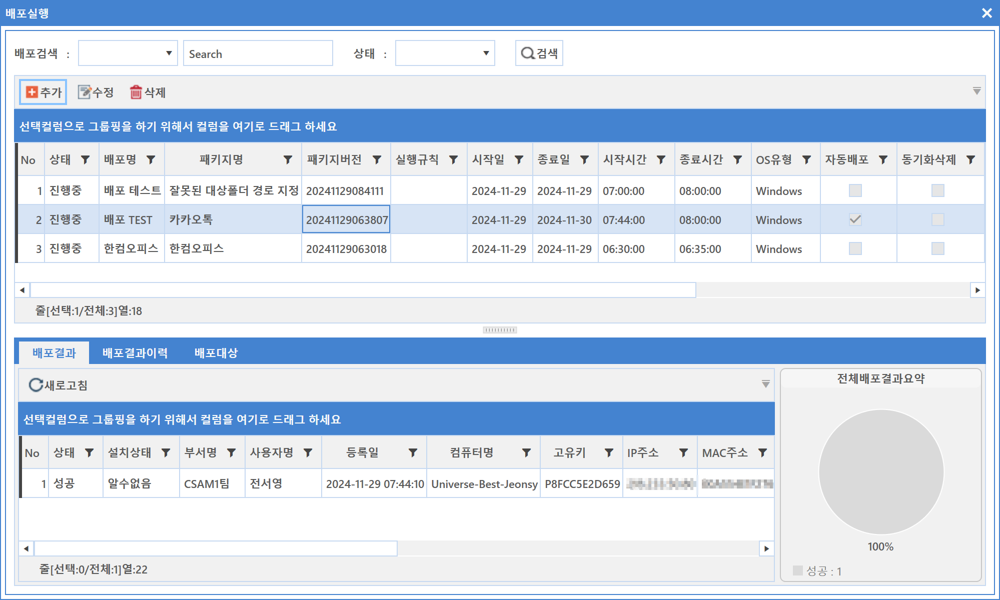
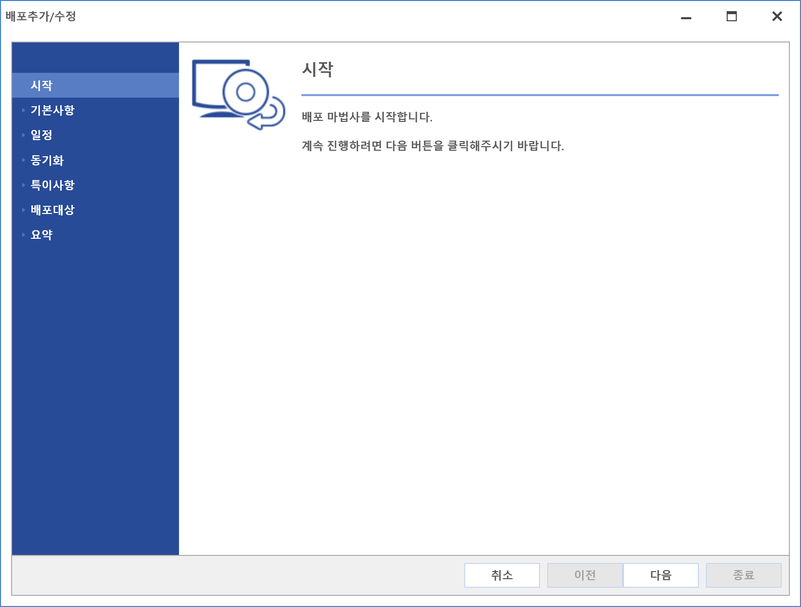
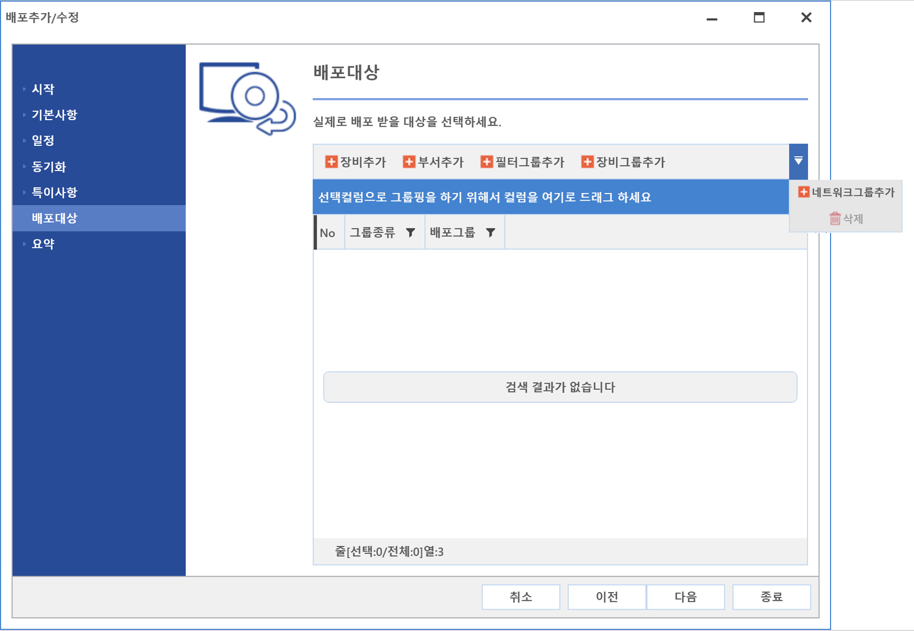
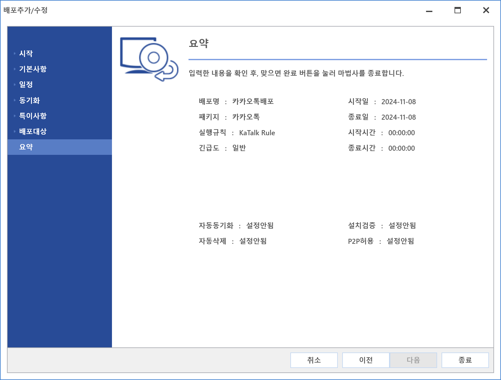
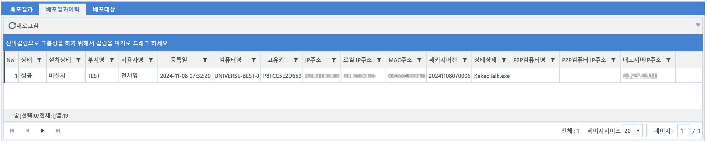
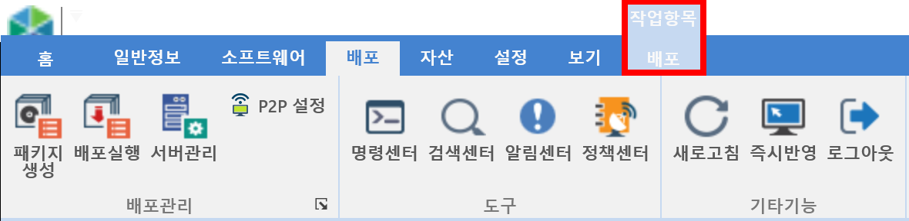

6-1-2. 배포실행
6-1-2. 배포실행
Source: https://www.sweeper.or.kr/etc/manual/612.html
6-1-2. 배포실행


생성된 패키지를 배포 추가할 수 있는 화면으로 배포 진행현황을 쉽게 확인할 수 있도록 다양한 상태와 그래프로 나타냅니다.


설정방법
- 추가 버튼을 클릭합니다.
-
배포추가/수정 Wizard가 팝업되며, 최초 화면은 Intro 이므로 다음 버튼을 클릭합니다.
 -
기본 사항을 설정 합니다. 설정이 완료되면 다음을 클릭합니다.

-
배포명 : 배포현황에 표시될 명칭을 입력합니다.
- 패키지 : 생성된 패키지를 선택합니다.

- 실행규칙 : 생성된 실행규칙을 선택합니다.

-
등급 :
-
일반 : 서버에서 설정된 접속 허용 수량 정책이 적용됨.
-
긴급 : 서버에서 설정된 접속 허용 수량 정책을 무시함.(빠른 배포를 위해 제한 수량을 무시함 - Network Traffic 영향 높음)
-
일정 설정을 합니다. 설정이 완료되면 다음을 클릭합니다.

-
일정 : 현재 날짜가 시작일자와 종료일자 사이이며, 현재 시간이 배포 시작과 종료시간 사이에 있을 경우만 배포합니다.
-
시작일자 : 배포정책 시작일자를 설정합니다.
- 종료일자 : 배포정책 종료일자를 설정합니다.
- 배포시작시간 : 배포정책 시작시간을 설정합니다.
-
배포종료시간 : 배포정책 종료시간을 설정합니다.
-
동기화 설정을 합니다. 설정이 완료되면 다음 버튼을 클릭합니다.

-
자동배포 : 배포 완료 후 파일이 추가 혹은 삭제된 경우 자동으로 재배포 진행 합니다.
-
동기화삭제여부 : 기본 옵션 사용 안함
-
해당 옵션 활성화 시 배포 경로 설정에 주의가 필요합니다.
- 옵션 활성화 시 지정된 경로 내 배포 파일 외의 모든 파일이 삭제됩니다.
(ex: 사용자 바탕화면 으로 경로 지정 시, 바탕화면 내 배포 파일을 제외한 모든 파일이 삭제 됨.)
-
일반배포 : 배포 완료 후 파일이 추가 혹은 삭제되더라도 재배포하지 않습니다.
-
자동삭제여부 : 설치 완료 후 배포파일 다운로드 폴더 내 파일을 삭제합니다. 에이전트에 배포파일이 내려간 시간 기준 24시간 이후 삭제됩니다.
-
특이여부를 설정합니다.

-
설치검증여부 : 설정된 배포 내용이 설치되었는지 여부를 검증하는 기능을 설정합니다.
-
설치유도 방법
-
없음 : 아무런 동작을 하지 않습니다.
- 경고 : 경고 메시지를 팝업시킵니다.
-
네트워크 차단 : 네트워크를 차단합니다.
-
설치검증유형
-
설치시까지 : 해당 배포가 설치될 때까지 검증합니다.
-
Agent 재시작 시 : 에이전트 재시작 시만 검증합니다.
-
강제재설치
-
일반적인 배포는 이미 SW가 설치된 경우 배포하지 않습니다.
-
해당옵션은 사용자 장비의 해당 SW 설치여부와 상관 없이 강제 (재)설치 됩니다.
-
P2P 허용 여부 : P2P 기능 정책을 사용하는 것에 대한 설정을 합니다.
-
배포 대상을 설정합니다. 설정을 완료하면 다음을 클릭합니다.
 -
장비추가 : 장비를 추가할 수 있습니다.
- 부서추가 : 부서를 추가할 수 있습니다.
- 필터그룹 추가 : 필터그룹을 추가할 수 있습니다.
- 장비그룹 추가 : 장비그룹을 추가할 수 있습니다.
-
네트워크그룹 추가 : 네트워크그룹을 추가할 수 있습니다.
-
설정을 모두 완료하면 정책설정에 대한 요약 내용을 확인할 수 있습니다.

현황 확인 방법
-
배포 리스트 확인 : 등록된 배포 리스트와 설정을 확인 및 조회할 수 있습니다.

-
배포 진행결과 확인 : 배포 결과 Tab을 선택하면 상태 및 그래프를 확인할 수 있습니다.

-
배포 결과 이력 확인 : 배포 결과 이력 Tab을 선택하면 현재까지 진행된 배포 이력을 확인할 수 있습니다.
 -
배포대상 확인 : 배포대상 Tab을 선택하면 배포대상을 확인할 수 있습니다. 추가 버튼(장비, 부서, 필터그룹)을 통해 대상을 더 추가/삭제할 수 있습니다.
 \
\
배포 상태 변경
개별 패키지를 우클릭 하여 변경 하거나, 다중으로 선택 한뒤 우클릭하여, 변경 할 수 있습니다.

참고사항
- 배포의 배포현황 메뉴항목을 선택하면 아래 그림과 같이 "배포작업항목" 메뉴가 추가로 나타납니다. 수행 가능한 내용은 위에서 설명한 내용과 동일 합니다.

- 배포 마법사 "특이여부"의 네트워크 차단은 Mac Agent의 경우 배포 진행 1시간 이내 설치되지 않으면, 네트워크 차단이 됩니다.
이때, 네트워크 차단을 위해서는 해당 프로그램 설치 후 Mac 장비의 재부팅이 필요합니다.
- 배포 마법사 "배포대상"에서 장비들은 배포 패키지 OS유형이 Windows/Mac 을 구분하여, 해당 장비만 등록됩니다.
© Copyright SWeeper Inc.. All Rights Reserved